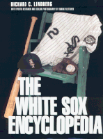

An "A to Z" reference of the South Side team that has long been neglected by chroniclers of the National Pastime
An "A to Z" reference of the South Side team that has long been neglected by chroniclers of the National Pastime


 An "A to Z" reference of the South Side team that has long been neglected by chroniclers of the National Pastime
An "A to Z" reference of the South Side team that has long been neglected by chroniclers of the National Pastime

|  |
The White Sox EncyclopediaRichard C. Lindberg, photographs by Mark Fletchercloth EAN: 978-1-56639-449-9 (ISBN: 1-56639-449-X) |
Philadelphia Book Clinic Certificate of Award, 1998
Much of the White Sox history is underscored by its sometimes grim tug-of-war with the Cubs for the loyalties of Chicago fans. Even though the Sox earned bragging rights by soundly thrashing their cross-town rivals in a celebrated World Series, the annual post-season City Series, and any number of charity games that followed, the White Sox emerged as the classic underdog following the epochal Black Sox Scandal of 1920. The conspiracy to throw the 1919 World Series was a defining moment in baseball—and for the fortunes of the beloved Chicago institution in the coming decades.
The White Sox Encyclopedia is a comprehensive history of one of the more controversial teams in the American league—the trials, tribulations and moments of glory of a ballclub interwoven into the fabric of the South Side Irish community that supported it through years of crowning glory, the disgrace of the devastating scandal, and the long, losing seasons that were to follow.
This book brings together, for the first time, 10 decades of baseball on the South Side and will be a wealth of information for White Sox fans, sports mavens, and trivia buffs alike. It includes:
700 illustrations, including a 16-page color section
complete statistics through the 1996 season on hitting streaks and ERA's, box scores, trades, an all-time roster of managers, players and position leaders
season-by-season descriptions
game highlights
over 100 player profiles from Tommie Agee to Richie Zisk and all the great stars past and present
the managerial strategies, the personalities, honors, and the milestones
descriptions of unforgettable moments and memories
The City Series, by Alex Williams
an immense treasure trove of little-known facts and surprising anecdotes
Foreword
Introduction
1. Down Through the Seasons
2. Player Profiles
3. All the Team's Men
4. The Strategists
5. The Front Office
6. The Ballparks
7. The Hall of Famers
8. Great Moments
9. White Sox Yarns
10. The Postseason Biart Williams
11. The City Series Biart Williams
12. Trades, Acquisitions, and Sales
13. Awards, Milestones, Honors, Stats, and Trivia
Sources
Acknowledgments
About the Authors
 | Richard C. Lindberg is the official White Sox historian and Managing Editor of the Illinois Police & Sheriff's News. He is author of Stealing First in a Two-Team Town, Who's on Third, Quotable Chicago, and Chicago Ragtime and has written for Chicago Tribune Magazine, Inside Chicago Magazine, and Chicago History Magazine. |
Baseball Encyclopedias of North America, edited by Rich Westcott.
The purpose of Baseball Encyclopedias of North America, edited by Rich Westcott, is to examine each of the clubs in big league baseball in an encyclopedic format. That is, to provide baseball fans a place to go to find information on a particular team organized in such a fashion that is available nowhere else. The series editor aims to concentrate on the 16 original teams of both leagues and publish each book as he is able to find the right person to do it. The books will all be unique because of their emphasis on three major components: 1) short, straight forward prose accounts of all aspects of the team including seasons, players, stadiums and front office people, 2) listings and statistics of all players of the team, and 3) heavy illustrations. These books can be read cover to cover or used as reference materials.
© 2015 Temple University. All Rights Reserved. This page: http://www.temple.edu/tempress/titles/1198_reg.html.